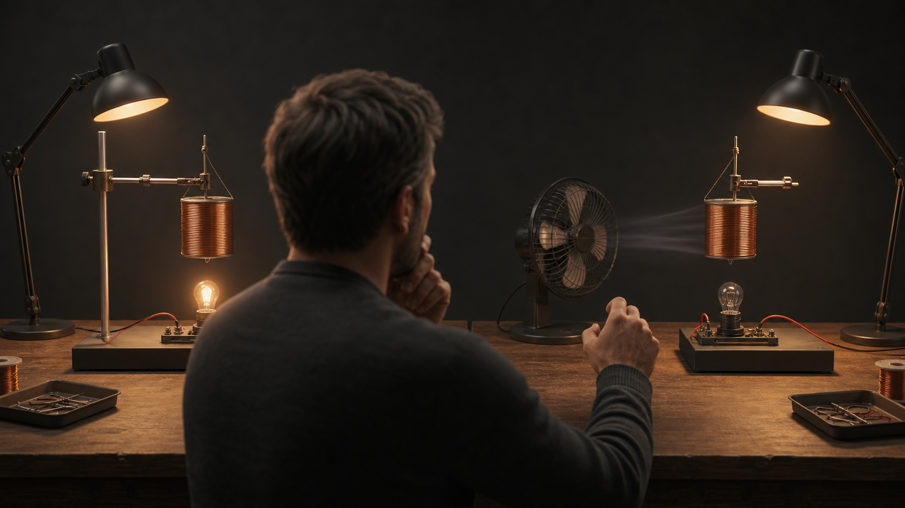
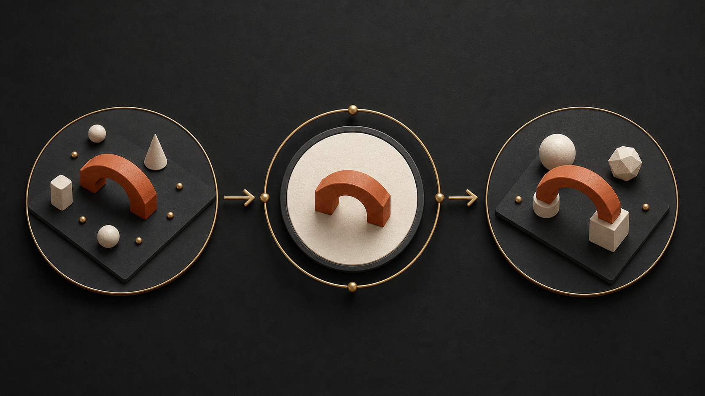

Installer l'obstacle cognitif avant toute explication : deux contextes proches peuvent exiger une decision differente.
Une narration visuelle en quatre temps. Chaque image porte un contrat pedagogique distinct et reste invisible pour l'apprenant jusqu'a sa validation.

Installer l'obstacle cognitif avant toute explication : deux contextes proches peuvent exiger une decision differente.

Rendre visible ce qui doit rester stable quand l'apparence de la situation change.
Relier la connaissance maitrisee au contexte nouveau pour demystifier le mecanisme du transfert.
Condenser la procedure mentale : reconnaitre les indices, choisir une action, puis la justifier.